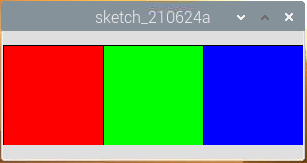

Nota
¡Hola! Bienvenido a la Comunidad de Entusiastas de SunFounder para Raspberry Pi, Arduino y ESP32 en Facebook. Sumérgete en el mundo de Raspberry Pi, Arduino y ESP32 junto a otros entusiastas.
¿Por qué unirse?
Soporte Experto: Resuelve problemas postventa y desafíos técnicos con la ayuda de nuestra comunidad y equipo.
Aprende y Comparte: Intercambia consejos y tutoriales para mejorar tus habilidades.
Avances Exclusivos: Accede anticipadamente a anuncios de nuevos productos y adelantos exclusivos.
Descuentos Especiales: Aprovecha descuentos exclusivos en nuestros productos más recientes.
Promociones Festivas y Sorteos: Participa en sorteos y promociones especiales.
👉 ¿Listo para explorar y crear con nosotros? Haz clic en [Aquí] y únete hoy mismo.
Bloques de Color Clicables
Ya hemos probado a dibujar un punto clicable para controlar el LED, ¡así que llevémoslo un paso más allá y dibujemos 3 cuadrados de colores para ajustar los colores RGB!
Conexión

Código
import processing.io.*; // usa la biblioteca GPIO
int[] pins = { 17, 18, 27 };
void setup() {
for (int i = 0; i < pins.length; i++) {
GPIO.pinMode(pins[i], GPIO.OUTPUT);
}
size(300, 100);
background(255);
}
void draw() {
fill(255, 0, 0);
rect(0, 0, width/3, height);
fill(0,255,0);
rect(width/3, 0, 2*width/3, height);
fill(0,0,255);
rect(2*width/3, 0, width, height);
}
void mouseClicked() {
for (int i = 0; i < pins.length; i++) {
GPIO.digitalWrite(pins[i],GPIO.LOW);
}
if (mouseX<width/3){
GPIO.digitalWrite(pins[0],GPIO.HIGH);
}else if (mouseX>width/3&&mouseX<2*width/3){
GPIO.digitalWrite(pins[1],GPIO.HIGH);
}else if (mouseX>2*width/3){
GPIO.digitalWrite(pins[2],GPIO.HIGH);
}
}
¿Cómo funciona?
Este proyecto tiene mucho en común con Clickable Dot, excepto que mejora las condiciones para determinar el evento de clic del ratón.
Primero, dibuja tres bloques de color en draw(), luego identifica qué bloque fue clicado en base al valor de mouseX (la coordenada en el eje X del ratón) y, finalmente, enciende el color correspondiente en el LED RGB.
¿Qué más?
Basándonos en la adición de luz, podemos hacer que el LED RGB muestre siete colores: agregar rojo a verde produce amarillo; agregar los tres colores primarios produce blanco. Ahora puedes probarlo tú mismo.
Para más información, consulta Processing Reference.